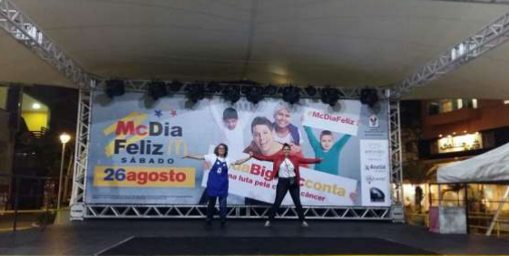

Este ano (2017) participei como anfitriã da loja do McDonald’s no dia do McDia Feliz, que acontece sempre no último sábado do mês de agosto, esse ano aconteceu no dia 26. Todos os anos sempre participei comprando o sanduíche divulgando a causa, mas nunca tão de perto, foi uma gratificante experiência. E achava que tudo vinha pronto igual a um sanduíche, ledo engano da minha parte.
Então tudo começou por um convite de um amigo para participar de um encontro na Casa Ronald McDonald Rio de Janeiro em maio, essa reunião e a visita guiada me deixaram sem chão, afinal reclamamos tanto da vida e dizemos ter problemas etc., mas se coloque no lugar de uma mãe ou da criança com câncer? Temos problemas? Claro que não! E essa doença é um desafio para todos os envolvidos. Um parêntese, lembro muito quando minha mãe ficou doente em 1987, nossa foi um Deus nos acuda, mas hoje vejo que já evoluímos bastante em termos de pesquisa, de medicação e de tratamento. E voltemos ao foco da captação de recursos.
Nessa primeira reunião motivadora e instigadora são passados os primeiros conceitos do dia, o que é, a causa, o estímulo a busca de parceiros, o engajamento dos voluntários e tantas outras coisas, mas sem deixar que desista e incentivando o a ser persistente e competitivo. A partir dessa data as reuniões de alinhamento passam a ser mensal, aonde todos os participantes firmam um compromisso de se engajar e decidir se será um voluntário ou anfitrião. Bom adoro um desafio e sou altamente competitiva, modéstia a parte, resolvi ser uma anfitriã. Porém não percebi a dimensão do meu ato e aí começa a minha jornada.
A primeira coisa foi buscar voluntários que pudessem me ajudar nessa atividade, mas precisava também conhecer o espaço e o gerente da loja. E com isso me deparei com a situação de que precisava buscar atrações para diversos públicos durante todo o período de funcionamento da loja de 10 às 23 horas, nossa! Como assim?! Lembrando que sou uma consumidora de artes, trabalho com diversos artistas, mas produção de tudo, nunca, pânico geral. Porém ao analisar a situação como um todo, afinal sou gerente de projeto, comecei então o fazer um levantamento de tudo e todas as ações que necessitava executar e a planejar como conseguir, principalmente VOLUNTÁRIOS, que é o que move esse projeto e sua capilaridade.
Agora vamos pensar nesse anfitrião. Ele tem que conscientizar o gerente da loja, no meu caso fiquei com a loja do Shopping Downtown na Barra de Tijuca/RJ (DOW para os íntimos), sobre a causa, descobrir sua meta de venda, nossa era de 785 sanduiches num dia (me incluí nesse desafio) e saber o que pode ou não fazer. E negociar passo a passo. E o responsável ou dono da loja? E o shopping? O prédio? O cinema? E as outras lojas? Tudo tem que ser conversado e negociado, afinal qualquer atividade fora do dia a dia poderia trazer transtornos aos envolvidos e diminuir seu faturamento esperado.
Percebi que tinha que negociar um a um e buscar quem conhecia quem para ajudar nas negociações. Por isso ter nossa listinha de amigos atualizada, mesmo que seja via LinkedIn ou Facebook sabendo quem está aonde é essencial. Procurei uma amiga que abriu as portas da negociação com o prédio e o shopping, nossa primeira barreira vencida e reunião agendada. Agora começam os entendimentos, pode palco, pode som na praça de alimentação, pode divulgação, pode que tipo de atrações, pode começar e terminar que horas, qual o limite? Estabelecer esses parâmetros me ajudaram muito na aliança e pude monetizar a colaboração desse parceiro fundamental, ao afinal me forneceu: o palco, os equipamentos de som e luz, o técnico de som, a divulgação e a decoração do palco com um banner gigante. Quanto custa isso, em torno de 8 mil reais ou mais? Uau! Nossa minha primeira captação para o evento. Claro que tinha a contrapartida habitual de aplicação de logomarca no material de divulgação, mas uma troca bem pequena tomando por base a causa.
Agora a segunda foi conseguir uma agencia de publicidade parceira que fizesse todas as peças de divulgação, ajudasse na difusão e fosse voluntário no dia para postar nas redes sociais tudo que acontecia em tempo real. Vamos a busca de outro amigo, quanto custa isso? Creio que 10 mil reais.
Porém se teremos atividades na loja e na praça precisamos de outro equipamento de som. Socorro! Aonde buscar? Vamos atrás de mais uma amiga que indicou um parceiro que prontamente me ajudou em troca da colocação da sua logomarca em todo material de divulgação, bom para ambos os lados. Vamos monetizar? R$ 5mil, afinal o técnico de som ficou lá durante 12 horas.
Tudo negociado e arrumado, mas faltava o principal, os artistas para animar a festa e fazer com que as pessoas participassem do evento. Então vamos à procura de amigos e parentes, ufa muita negociação, afinal as pessoas tinham que acreditar na causa, comprar a ideia e investir recursos nisso, por que não tinha dinheiro para a passagem ou cachê. E alguns falaram assim, mas uma empresa tão rica e com bom faturamento não pode pagar, aí vai a primeira explicação. O McDonald’s não é dono do Instituto Ronald McDonald ou das Casas Ronald McDonald. Ele faz parte da governança, onde seus executivos de forma voluntária trabalham em diversas funções usando suas expertises. Os únicos recursos financeiros repassados vêm desse dia específico, além de outras parceiras com fornecedores. A Casa Ronald McDonald consegue cobrir até 50% do seu custeio com a Campanha McDia Feliz. Por isso a busca de outros incentivadores é crucial para manter todas as atividades e a manutenção da casa é muito importante.
E vale lembrar também que o Instituto Ronald McDonald tem um edital anual para a distribuição desse recurso e o acompanhamento da execução dos projetos se dá através das prestações de contas e do monitoramento das atividades das diversas Instituições. São as Casas Ronald McDonald, são 6 no Brasil, mas tem o Inca (Instituto Nacional do Câncer) e diversas outras organizações que também são contempladas com os Programas de Diagnóstico Precoce, Atenção Integral e Espaço da Família Ronald McDonald.
Nossa convencer as pessoas do que acreditamos é muito difícil, mas vale a pena. Então depois de muita negociação e de uma parceira fundamental para a operação conseguimos: um contador de história, um mágico, as princesas e heróis e um coral, nossa como fiquei contente, agora temos que monetizar também, quanto custa isso tudo? Nossa vamos aos detalhes para ajudar nessa tarefa. Os contadores de história tinham 3 pessoas e a apresentação durava 1 hora então com transporte e alimentação o valor era de R$ 1,5mil. E o mágico? Nossa arrasou! Super dinâmico e inovador, foi bem divertido. Quanto será que custa um show de mágica? Numa busca na internet em torno de R$ 250 a hora, então consegui em torno de R$ 400,00. E as princesas e heróis foram 5, afinal o Super Homem veio acompanhando a Tiana, a Bela, a Ariel e a Branca de Neve, geralmente para festas infantis em torno de R$ 500,00 a 2mil, afinal tinha as fotos exclusivas na loja e os shows, emocionante ver as crianças interagindo com elas (nós também). E isso ajudou e muito a venda de sanduíches, por que não podemos esquecer nosso objetivo, afinal eles se transformam em arrecadação para a causa. E para fechar a noite com chave de ouro um coral da melhor idade fantástico e super animado com quase 30 pessoas, que lotou o espaço e melhor ainda nenhum dos restaurantes em volta reclamaram, afinal a música era inspiradora. Creio que pela pesquisa em torno de R$ 7mil ou mais.
Agora então vamos somar o que consegui captar: vendi quase 95% da meta de sanduíches, consegui realizar atrações no valor de R$ 10.950,00, publicidade R$ 10.000,00, equipamentos e infraestrutura R$ 13.000,00. E os voluntários foram 6, afinal engajar pessoas ainda é muito difícil, principalmente os que primeiro perguntam se não tem pagamento de diária ou de refeição ou ainda transporte, que foram divididos em 2 turnos de 4 horas, vou estipular a hora a R$ 20,00 (Pouco? Não sei.), pois sua principal atividade era divulgar a causa e convencer as pessoas na fila e no shopping a comprar o Big Mac e não outro sanduíche, total R$ 480,00. E o mais importante os brindes que demos de camiseta e produtos de beleza da Sou Dessas tanto para os compradores de sanduíches quanto para a equipe da loja, afinal eles fazem toda a diferença no dia, com valor total girando em torno de R$ 2mil. Com isso tudo posso dizer que captei R$ 48.101,50, mas diretamente para a causa vai a venda dos sanduíches, esse valor é uma economia na arrecadação e na mobilização Face to Face.
O que achei mais complexo é a questão da venda dos tíquetes antecipados, pois cada instituição pode vende-los e com isso tem uma arrecadação líquida e certa. De posse desse tíquete, que esse ano custou R$ 15,50, o comprador pode resgatar ou comer o sanduíche em qualquer loja do McDonald’s no país. Percebe se que tem uma super operação invisível nessas ações?
O mais interessante é conversar com as pessoas na fila nesse dia que dizem hoje posso comer um sanduíche por que a causa vale a pena, afinal é isso que nos move, acreditar em algo que vale a pena. Eu acredito nessa causa! E me pergunto se não existisse os voluntários onde que cada um decide como e o que terá numa loja que será anfitrião, o McDia Feliz teria essa capilaridade? Eu não sei responder a essa questão e tenho refletido muito sobre isso. Afinal se eles tivessem que implantar uma metodologia ou um controle de todas as ações, quanto isso custaria? Que ferramentas seriam utilizadas?
Claro que creio que algumas coisas poderiam ser melhoradas no processo e no controle, afinal quem é essa força de voluntários? Parte são invisíveis e talvez precisássemos dar nomes a essas pessoas até para mostrar ao mundo o seu valor. Uma melhor divulgação das ações das lojas, divisão igualitárias das atrações, muitas vezes uma perto da outra pulveriza as vendas, padronização de informação e de materiais, as negociações diretas com os shoppings, gerentes e fornecedores. Agora seria bom por que assim teríamos indicadores claros para medir, mas teríamos a mesma força ou espontaneidade ou alegria de fazer o McDia Feliz? Creio que não, apesar de que adoro um planejamento e um controle. Para ilustrar isso tudo abaixo fotos do evento. Seja você também um voluntário. Acredite numa causa! Fazer o bem é bom demais.
Sandra Helena Pedroso é Mestre em Sistema de Gestão de Projetos Sociais, bacharel da Contabilidade, produtora cultural e social, Diretora do Ateliê de Cultura e do SindicontRio. Conselheira do CRC-RJ e da ABCR. Presidente do CAE e do IBAR. Voluntária do PVCC-RJ, da Casa Ronald e do Observatório Social do Rio de Janeiro.